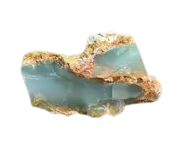

Mineral Grimoire
 Macedonian Green Opal
Macedonian Green Opal
Appearance
Green opaque, resin-like stone.
Origin
Serbia near the Macedonian border.
Attributes
Stimulating the heart chakras, Macedonian Green Opal heals emotional wounds from any timeframe. Dissolving memories held in subtle bodies, it brings in light. Helpful in treating depression and spiritual apathy, it disperses negative energies and turns anger into joyful self-assertion. Promoting confidence and stimulating creativity, it helps express yourself in the world. Macedonian Green Opal provides a burst of physical energy to overcome depletion and promotes healthy diets. It is helpful during convalescence and prolonged periods of stress.
Healing
Macedonian Green Opal is reputed to be helpful for colds, flu, and fevers and for strengthening the immune system.
Position
Grid, position or hold as appropriate. Place over the thymus to stimulate the immune system. Disperse gem essence into the aura or environment.
Spellworking
Macedonian Green Opal heals emotional wounds from any timeframe. Use it for heart healing, dissolving old memories, treating depression, and turning anger into joyful self-assertion. Like all green stones, it stimulates the heart chakra and promotes creativity and confidence.